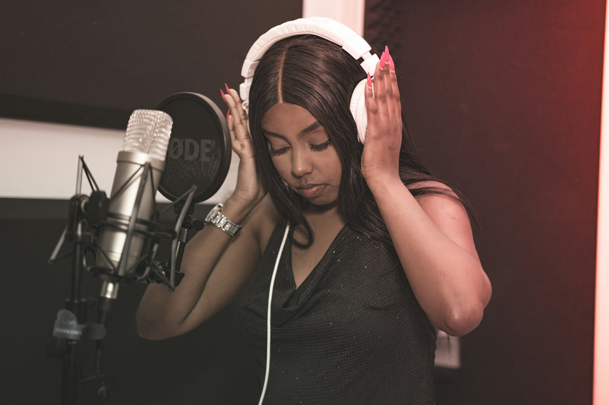
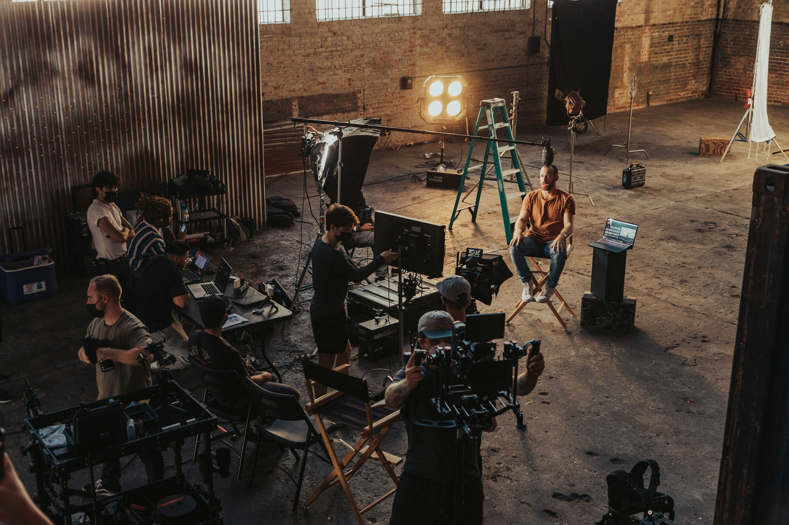
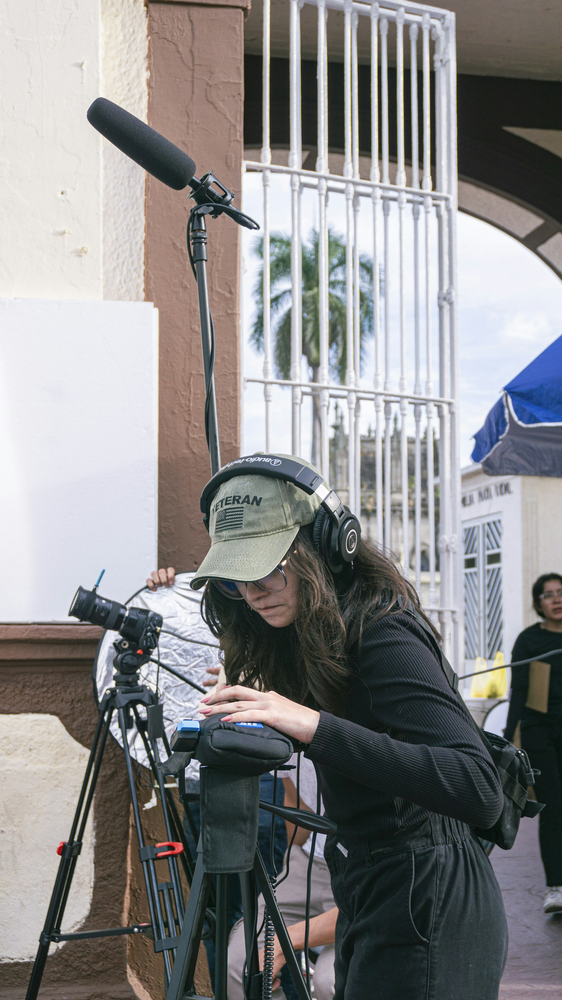

01
Audio
Scripted audio drama, fiction podcasts and factual series. We cast, direct and record, then build the sound design around the performances.
We started in audio and it's still most of what we make: scripted drama, fiction podcasts and factual audio series.
We also shoot films and content for artists, galleries and brands, and most of those come with an audio series alongside.
Who we've made work with
Led by Jade Matthew, BBC Audio Drama Award winner, and Andy King, formerly of MPC and Tantrum

01
Scripted audio drama, fiction podcasts and factual series. We cast, direct and record, then build the sound design around the performances.

02
Branded films, social series and music videos for brands, charities and artists.
Eleni Drake, Half AliveHershey'sComic Relief

03
Short films and documentary series, shot with sound in mind and often paired with an audio series.
How we work
Jade directs the cast. Andy shoots and cuts. We bring in writers, sound designers and crew we've worked with before, and keep the team small, so the people you meet at the start are the people who make it.
Tell us about your projectWork

In the studio
Jade with Professor Alex Hill and host James Mawson, recording The Innovation Paradox for GCV at London Podcast Studios.
Listen to the seriesNow
Jade plays a lead role in a AAA horror game shot with motion capture. Working title Project Noise.
Andy shot a Hershey's campaign starring footballer Christian Pulisic.
A four part series for Comic Relief's Instagram about projects in Malawi, made with local filmmakers and event coordinators.
Our short film screened at Minute Shorts.
About Slowdance
Jade Matthew founded Slowdance after twenty years as an actor across BBC radio, television, film and games. She won a BBC Audio Drama Award for A Kidnapping on Radio 4 and now directs and produces.

Andy King runs production. He started at MPC on Life of Pi and Skyfall, worked on campaigns for Volkswagen, IKEA and Google at Tantrum, and now directs film, adverts and music videos.
Enquire
Tell us what you're making.
It comes straight to Jade. For podcasts you can also email podcast@slowdanceproductions.com